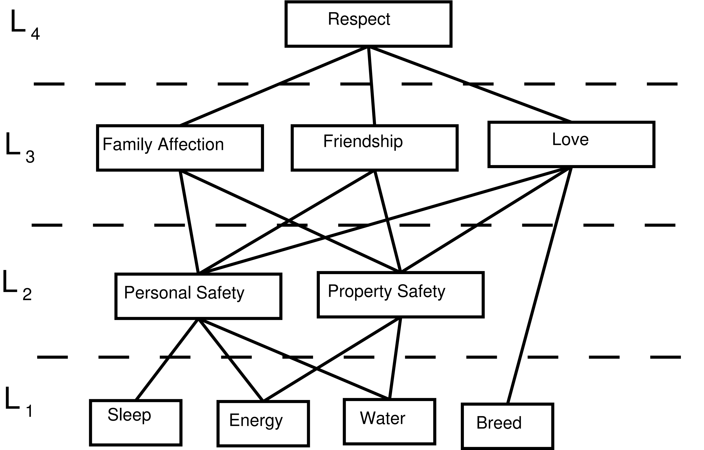
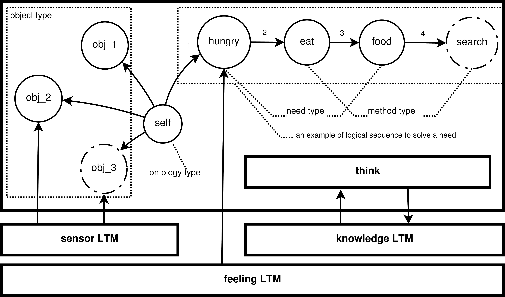

The major criteria to distinguish conscious Artificial Intelligence (AI) and non-conscious AI is whether the conscious is from the real needs. Based on this criteria, we develop ConsciousControlFlow(CCF) to show the need-based conscious AI. The system is based on the computational model based on short-term memory (STM) and long-term memory (LTM) for consciousness and the hierarchy of needs. To generate AI based on real needs of the agent, we develop several LTMs for special functions such as feeling and . Experiments show that the the agents in the proposed system behaviors according to the real needs, which coincides with the prediction.
In the architecture, a STM represents the consciousness with limited space, and various LTMs implements complex real mantel functions such as pain, body control, natural language processing, vision. LTMs compete to enter STM according to their strengths, which is determined by the needs.
CCF--theory frameworkabstractMaslow's hierarchy of needsshort-term memory (STM)slotthinklong-term memory (LTM)LinksRelated Readings
Inspired by Maslow’s hierarchy of needs, we also base system on the hierarchy of needs. To simplify the system, we implement four levels of needs as shown in Figure 1. As the base, each individual in our system has 4 based needs, i.e. sleep,energy, water and breed,which are quantized as a state vector, respectively. The need in higher level is considered as a prediction with needs in lower level.

STM could be considered as a central processor with a cache, whose basic unit is called slot. This is a special cache. On the one hand, those slots are organized as a tree rather than a liner structure. On the other hand, the number of slot in cache has an upper bound of 7. Further, some operations are defined for STM to take operations on the cache, and these operations are called think uniformly.
As unit of STM's storage, slot has four types, i.e. ontology, need, object and method. We implement STM and LTM as shown in Figure 2.
| slot types | meaning |
|---|---|
| ontology | ontology identifies the agent itself. It has only one instance denoted as . If the agent is conscious, is in STM as the root. Otherwise, if the agent is sleeping or unconscious for some reason, the cache becomes empty, with switched out. |
| need | need represents the needs from feeling LTMs which will be introduced in the next section. Each instance of need corresponds to a feeling LTM . Besides the copy of , has a weight to show its intensity, which is transferred from and is a key factor to decide the need to be processed by STM. The weight computation and the details of LTMs' competition for STM will be described in Section LTM. |
| object | object accepts information from the environment. All objects corresponds to the sensor LTM. Each object represents one kind of signals from the sensor LTM. |
| method | method denotes the methods used to solve needs in slots. However, slots just maintain a label of the method to save more storage, and the modules of the methods are in the LTM. |

think module contains many functions about thinking. It makes decisions based on knowledge LTM as that will be discussed in the next subsection.
| functions in think | Function of a functions |
|---|---|
| decision | Decision determines the method used to solve the need. Before the method is executed, think detects whether the premises of the action can be met. If the conditions are satisfied, this module will calculate parameters for the action, and monitor the running of to control its ending. Otherwise, new requirements are generated by thinking and enter the slots. |
| reduction | During monitoring, reduction, which is one of the functions in think to identify the event that the need is solved, will be conducted if there is an object happening in one slot sharing the same to the label of some need. For example, if is food, then reduction happens, and as a result, food and search will be removed from slots. |
| LTM type | Function |
|---|---|
| Knowledge | Knowledge is a special kind of LTM. The storage is in the RDF and could be handled with graph engines. The functions for Knowledge include save, update and query. update saves information that has been actively or passively paid attention to or repeated. Apart from the basic query function, the agent should also has the ability to take deep thought based on knowledge and the cache to solve complex tasks, which will be discussed in future work. |
| skill | skill is also a special kind of LTM. We furnished skills for each need, and those skills help agent restore and interact with environment. In the future, the skills can be split and reorganized freely. The eat and search in the above example are examples. Basically, each need corresponds to a skill to solve it. Additionally, we develop some auxiliary skills such as search, observe, move and put some thing in some place. |
| Feeling | Feeling LTMs keep on detecting the status of individual itself. The needs are generated by them. At present, we have implemented 10 feeling LTMs including thirsty, hungry, breed, sleep, personal safety, property safety, family affection, friendship, love and respect corresponding to Maslow's hierarchy of needs. Each feeling LTM has two basic attributes,satisfaction and weight. We measure the satisfaction of need with the following three rules, (1). The satisfaction of each physiological need will decrease with time. (2). All the satisfactions of needs will be affected by some specific events. (3). The level of satisfaction of high-level needs has an impact on the low-level ones. |
The function of links is to transfer information between STM and LTMs, and also within LTMs. For the first kind of links, links could be classified into Up-Tree and Down-Tree according to the direction of information transformation, which are introduced as follows.
| link type | function |
|---|---|
| Up-Tree | The purpose of the Up-Tree is to run competitions that determine which chunks (trunk is a copy of some LTM at a specific time) of LTM is to be loaded into STM. The Up-Tree has a single root in STM and leaves, one leaf in each of the LTM processors. Every directed path from a leaf to the root has the same length , = . Every node of the Up-Tree that is not a leaf (sits at some level , ) has either two children. |
| Down-Tree | At each time , the content of STM is broadcast via this Down-Tree to all n LTMs. |
[1]: "Maslow and the motivation hierarchy: Measuring satisfaction of the" [2]: "More about STM and LTM: A neural attentional model for access to consciousness: A global workspace perspective." [3]: "More about up down tree: Towards a Conscious AI: A Computer Architecture Inspired by Cognitive Neuroscience."